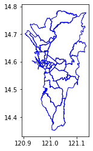
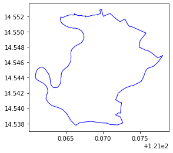
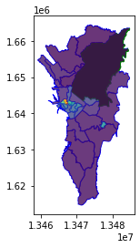

import geopandas as gpd
import matplotlib.pyplot as plt
import pandas as pd
import geowrangler2.area_zonal_stats as azsExploring Internet Speeds with Ookla
A simple use case demo for using geowrangler2 modules to find the Philippine provinces/towns with the slowest/fastest internet speeds.
Summary
This Use Case Demo shows how to use the geowrangler2.datasets.ookla and the geowrangler2.area_zonal_stats modules to find the slowest/fastest internet speeds within an area or region of interest.
How geowrangler2 can make this process easier
geowrangler2 can:
- Validate your geodataframes
- Help you download Ookla data (internet speed)
- Generate zonal stats for your province/town
What you need to do
- Get your AOIs (areas of interest) - get the boundaries of your administrative regions
- Download ookla data
- Validate AOIs and ookla data
- Generate zonal Stats
- Analyze and find fastest/slowest internet speeds
Tutorial
Import libraries
Lets start by importing the required libraries
Download Admin Areas
Next, we get the administrative boundaries geodataset using data from Humanitarian Data Exchange
Set Region Filter
Important
setting the region filter to None will compute the zonal stats for the whole Philippines and can take a lot longer than for a region
Set the REGION_FILTER to your Region (or None for the whole Philippines)
# REGION_FILTER = None # All regions
REGION_FILTER = "National Capital Region" # limit to 1 to speed up processingDownload the geodataset containing the admin areas of your country.
Here we are using the data for the Philippines.
# no_test
phl_admin3_file = "phl_adminboundaries_candidate_adm3"
phl_admin3_zip = f"{phl_admin3_file}.zip"
# shapefiles
phl_admin3_link = f"https://data.humdata.org/dataset/caf116df-f984-4deb-85ca-41b349d3f313/resource/12457689-6a86-4474-8032-5ca9464d38a8/download/{phl_admin3_zip}"Download the zipped file. Depending on your internet connection, it can take several minutes.
# no_test
![ ! -e ../data/{phl_admin3_zip} ] && curl -L -o ../data/{phl_admin3_zip} {phl_admin3_link}CPU times: user 3.9 ms, sys: 12.6 ms, total: 16.5 ms
Wall time: 123 ms!mkdir -p ../data/{phl_admin3_file}main_file = "phl_admbnda_adm3_psa_namria_20200529"
phl_admin3_shp = f"../data/{phl_admin3_file}/{main_file}.shp"![ ! -e {phl_admin3_shp} ] && unzip -d ../data/{phl_admin3_file} ../data/{phl_admin3_zip}CPU times: user 5.08 ms, sys: 3.09 ms, total: 8.17 ms
Wall time: 112 msLoad the admin area geo dataset.
In our example we are loading the .shp or shape file as a geopandas dataframe.
print(f"loading {phl_admin3_shp}")
admin3 = gpd.read_file(phl_admin3_shp)loading ../data/phl_adminboundaries_candidate_adm3/phl_admbnda_adm3_psa_namria_20200529.shp
CPU times: user 4.4 s, sys: 4.54 s, total: 8.93 s
Wall time: 9.1 sadmin3.head()| Shape_Leng | Shape_Area | ADM3_EN | ADM3_PCODE | ADM3_REF | ADM3ALT1EN | ADM3ALT2EN | ADM2_EN | ADM2_PCODE | ADM1_EN | ADM1_PCODE | ADM0_EN | ADM0_PCODE | date | validOn | validTo | geometry | |
|---|---|---|---|---|---|---|---|---|---|---|---|---|---|---|---|---|---|
| 0 | 1.601219 | 0.063496 | Aborlan | PH175301000 | None | None | None | Palawan | PH175300000 | Region IV-B | PH170000000 | Philippines (the) | PH | 2016-06-30 | 2020-05-29 | None | MULTIPOLYGON (((118.58350 9.37700, 118.58398 9... |
| 1 | 1.078749 | 0.050232 | Abra de Ilog | PH175101000 | None | None | None | Occidental Mindoro | PH175100000 | Region IV-B | PH170000000 | Philippines (the) | PH | 2016-06-30 | 2020-05-29 | None | POLYGON ((120.58412 13.50198, 120.58420 13.501... |
| 2 | 0.424301 | 0.006453 | Abucay | PH030801000 | None | None | None | Bataan | PH030800000 | Region III | PH030000000 | Philippines (the) | PH | 2016-06-30 | 2020-05-29 | None | POLYGON ((120.49873 14.75614, 120.49891 14.755... |
| 3 | 0.566053 | 0.011343 | Abulug | PH021501000 | None | None | None | Cagayan | PH021500000 | Region II | PH020000000 | Philippines (the) | PH | 2016-06-30 | 2020-05-29 | None | POLYGON ((121.43455 18.46651, 121.43502 18.466... |
| 4 | 1.013649 | 0.026124 | Abuyog | PH083701000 | None | None | None | Leyte | PH083700000 | Region VIII | PH080000000 | Philippines (the) | PH | 2016-06-30 | 2020-05-29 | None | MULTIPOLYGON (((125.02684 10.73500, 125.02683 ... |
list(admin3.columns.values)['Shape_Leng',
'Shape_Area',
'ADM3_EN',
'ADM3_PCODE',
'ADM3_REF',
'ADM3ALT1EN',
'ADM3ALT2EN',
'ADM2_EN',
'ADM2_PCODE',
'ADM1_EN',
'ADM1_PCODE',
'ADM0_EN',
'ADM0_PCODE',
'date',
'validOn',
'validTo',
'geometry']admin3.ADM1_EN.unique()array(['Region IV-B', 'Region III', 'Region II', 'Region VIII',
'Region I', 'Region IV-A', 'Cordillera Administrative Region',
'Region VI', 'Autonomous Region in Muslim Mindanao', 'Region XII',
'Region VII', 'Region XIII', 'Region IX', 'Region X', 'Region V',
'Region XI', 'National Capital Region'], dtype=object)Limit the admin regions to only 1 in order to make the process run faster.
The REGION FILTER is set in the Set Region Filter Section
if REGION_FILTER:
admin3 = admin3[admin3.ADM1_EN == REGION_FILTER]import matplotlib.pyplot as pltax = plt.axes()
ax = admin3.plot(ax=ax, facecolor="none", edgecolor="blue")

ax = plt.axes()
ax = admin3[admin3.ADM3_EN == "Pateros"].plot(ax=ax, facecolor="none", edgecolor="blue")CPU times: user 115 ms, sys: 92.5 ms, total: 207 ms
Wall time: 105 ms
admin3.crs<Geographic 2D CRS: EPSG:4326>
Name: WGS 84
Axis Info [ellipsoidal]:
- Lat[north]: Geodetic latitude (degree)
- Lon[east]: Geodetic longitude (degree)
Area of Use:
- name: World.
- bounds: (-180.0, -90.0, 180.0, 90.0)
Datum: World Geodetic System 1984 ensemble
- Ellipsoid: WGS 84
- Prime Meridian: Greenwichadmin3.total_boundsarray([120.90639543, 14.35172957, 121.13503641, 14.78529173])len(admin3)30Download Ookla data
Use the geowrangler2.datasets.ookla module to explore and download ookla (internet speed) data
from geowrangler2.datasets import ooklaList the publically available ookla datasets
ookla_dsets = ookla.list_ookla_files()
ookla_dsetsCPU times: user 76.1 ms, sys: 14.5 ms, total: 90.5 ms
Wall time: 1.13 s{OoklaQuarter(type='fixed', year='2019', quarter='1'): '2019-01-01_performance_fixed_tiles.parquet',
OoklaQuarter(type='fixed', year='2019', quarter='2'): '2019-04-01_performance_fixed_tiles.parquet',
OoklaQuarter(type='fixed', year='2019', quarter='3'): '2019-07-01_performance_fixed_tiles.parquet',
OoklaQuarter(type='fixed', year='2019', quarter='4'): '2019-10-01_performance_fixed_tiles.parquet',
OoklaQuarter(type='fixed', year='2020', quarter='1'): '2020-01-01_performance_fixed_tiles.parquet',
OoklaQuarter(type='fixed', year='2020', quarter='2'): '2020-04-01_performance_fixed_tiles.parquet',
OoklaQuarter(type='fixed', year='2020', quarter='3'): '2020-07-01_performance_fixed_tiles.parquet',
OoklaQuarter(type='fixed', year='2020', quarter='4'): '2020-10-01_performance_fixed_tiles.parquet',
OoklaQuarter(type='fixed', year='2021', quarter='1'): '2021-01-01_performance_fixed_tiles.parquet',
OoklaQuarter(type='fixed', year='2021', quarter='2'): '2021-04-01_performance_fixed_tiles.parquet',
OoklaQuarter(type='fixed', year='2021', quarter='3'): '2021-07-01_performance_fixed_tiles.parquet',
OoklaQuarter(type='fixed', year='2021', quarter='4'): '2021-10-01_performance_fixed_tiles.parquet',
OoklaQuarter(type='fixed', year='2022', quarter='1'): '2022-01-01_performance_fixed_tiles.parquet',
OoklaQuarter(type='fixed', year='2022', quarter='2'): '2022-04-01_performance_fixed_tiles.parquet',
OoklaQuarter(type='mobile', year='2019', quarter='1'): '2019-01-01_performance_mobile_tiles.parquet',
OoklaQuarter(type='mobile', year='2019', quarter='2'): '2019-04-01_performance_mobile_tiles.parquet',
OoklaQuarter(type='mobile', year='2019', quarter='3'): '2019-07-01_performance_mobile_tiles.parquet',
OoklaQuarter(type='mobile', year='2019', quarter='4'): '2019-10-01_performance_mobile_tiles.parquet',
OoklaQuarter(type='mobile', year='2020', quarter='1'): '2020-01-01_performance_mobile_tiles.parquet',
OoklaQuarter(type='mobile', year='2020', quarter='2'): '2020-04-01_performance_mobile_tiles.parquet',
OoklaQuarter(type='mobile', year='2020', quarter='3'): '2020-07-01_performance_mobile_tiles.parquet',
OoklaQuarter(type='mobile', year='2020', quarter='4'): '2020-10-01_performance_mobile_tiles.parquet',
OoklaQuarter(type='mobile', year='2021', quarter='1'): '2021-01-01_performance_mobile_tiles.parquet',
OoklaQuarter(type='mobile', year='2021', quarter='2'): '2021-04-01_performance_mobile_tiles.parquet',
OoklaQuarter(type='mobile', year='2021', quarter='3'): '2021-07-01_performance_mobile_tiles.parquet',
OoklaQuarter(type='mobile', year='2021', quarter='4'): '2021-10-01_performance_mobile_tiles.parquet',
OoklaQuarter(type='mobile', year='2022', quarter='1'): '2022-01-01_performance_mobile_tiles.parquet',
OoklaQuarter(type='mobile', year='2022', quarter='2'): '2022-04-01_performance_mobile_tiles.parquet'}Download the latest data (as of the time of writing this)
ookla_params = dict(year="2022", quarter="2", directory="../data")ookla_fixed = ookla.download_ookla_file(type_="fixed", **ookla_params)CPU times: user 143 µs, sys: 118 µs, total: 261 µs
Wall time: 182 µsookla_fixedPosixPath('../data/2022-04-01_performance_fixed_tiles.parquet')Convert ookla data into a GeoDataFrame
The downloaded file from ookla is not yet a geodataset, so we will h have to convert it into a GeoDataFrame suitable for use in geowrangler2.
import pandas as pdThe downloaded ookla data contains the internet speed data for the whole world and can take a minute or two to load.
Later, we will show how to filter the data to only include the data relevant to our AOI.
fixed = pd.read_parquet(ookla_fixed)CPU times: user 7.72 s, sys: 14.2 s, total: 21.9 s
Wall time: 19.2 slen(fixed)6581735fixed.head()| quadkey | tile | avg_d_kbps | avg_u_kbps | avg_lat_ms | tests | devices | |
|---|---|---|---|---|---|---|---|
| 0 | 0000122200000000 | POLYGON((-168.75 84.1249731939109, -168.744506... | 97075 | 42458 | 65 | 7 | 1 |
| 1 | 0022133222312322 | POLYGON((-160.02685546875 70.6435894914449, -1... | 8324 | 3798 | 91 | 2 | 1 |
| 2 | 0022133222330100 | POLYGON((-160.02685546875 70.6417687358462, -1... | 14972 | 4461 | 94 | 29 | 2 |
| 3 | 0022133222330201 | POLYGON((-160.043334960938 70.6344840663086, -... | 6253 | 2818 | 91 | 1 | 1 |
| 4 | 0022202203233313 | POLYGON((-179.478149414062 68.9169336615194, -... | 700 | 126 | 1090 | 1 | 1 |
fixed.dtypesquadkey object
tile object
avg_d_kbps int64
avg_u_kbps int64
avg_lat_ms int64
tests int64
devices int64
dtype: objectThe data is now a Pandas DataFrame but this needs to be converted to a GeoDataFrame by converting the tile column into a geometry with a crs (Coordinate Reference System).
See EPSG:4326 for more details about the CRS.
Converting the data can also take a minute or two.
fixed["geometry"] = gpd.GeoSeries.from_wkt(fixed.tile, crs="EPSG:4326")CPU times: user 30.1 s, sys: 1.55 s, total: 31.6 s
Wall time: 31.3 sfixed.head()| quadkey | tile | avg_d_kbps | avg_u_kbps | avg_lat_ms | tests | devices | geometry | |
|---|---|---|---|---|---|---|---|---|
| 0 | 0000122200000000 | POLYGON((-168.75 84.1249731939109, -168.744506... | 97075 | 42458 | 65 | 7 | 1 | POLYGON ((-168.75000 84.12497, -168.74451 84.1... |
| 1 | 0022133222312322 | POLYGON((-160.02685546875 70.6435894914449, -1... | 8324 | 3798 | 91 | 2 | 1 | POLYGON ((-160.02686 70.64359, -160.02136 70.6... |
| 2 | 0022133222330100 | POLYGON((-160.02685546875 70.6417687358462, -1... | 14972 | 4461 | 94 | 29 | 2 | POLYGON ((-160.02686 70.64177, -160.02136 70.6... |
| 3 | 0022133222330201 | POLYGON((-160.043334960938 70.6344840663086, -... | 6253 | 2818 | 91 | 1 | 1 | POLYGON ((-160.04333 70.63448, -160.03784 70.6... |
| 4 | 0022202203233313 | POLYGON((-179.478149414062 68.9169336615194, -... | 700 | 126 | 1090 | 1 | 1 | POLYGON ((-179.47815 68.91693, -179.47266 68.9... |
fixed.drop(columns=["tile"], inplace=True)CPU times: user 515 ms, sys: 95.8 ms, total: 610 ms
Wall time: 606 msfixed = gpd.GeoDataFrame(fixed, geometry="geometry", crs="EPSG:4326")CPU times: user 71.8 ms, sys: 61.1 ms, total: 133 ms
Wall time: 131 msValidate AOI and Data Geometries
In order to prevent more headaches as we process and analyze geospatial datasets down the line, it is prudent to check that our datasets have valid geometries.
We can use the geowrangler2.validation module to check as well fix these problems.
from geowrangler2.validation import GeometryValidationValidate AOI
admin3_gvm = GeometryValidation(admin3)valid_admin3 = admin3_gvm.validate_all()CPU times: user 306 ms, sys: 1.56 ms, total: 308 ms
Wall time: 306 msvalid_admin3.head()| Shape_Leng | Shape_Area | ADM3_EN | ADM3_PCODE | ADM3_REF | ADM3ALT1EN | ADM3ALT2EN | ADM2_EN | ADM2_PCODE | ADM1_EN | ADM1_PCODE | ADM0_EN | ADM0_PCODE | date | validOn | validTo | geometry | is_not_null | is_not_self_intersecting | is_oriented_properly | is_within_crs_bounds | area_is_not_zero | |
|---|---|---|---|---|---|---|---|---|---|---|---|---|---|---|---|---|---|---|---|---|---|---|
| 211 | 0.037803 | 0.000056 | Binondo | PH133902000 | None | None | None | NCR, City of Manila, First District | PH133900000 | National Capital Region | PH130000000 | Philippines (the) | PH | 2016-06-30 | 2020-05-29 | None | POLYGON ((120.97738 14.60226, 120.97765 14.602... | True | True | False | True | True |
| 308 | 0.692758 | 0.004468 | Caloocan City | PH137501000 | None | None | None | NCR, Third District | PH137500000 | National Capital Region | PH130000000 | Philippines (the) | PH | 2016-06-30 | 2020-05-29 | None | MULTIPOLYGON (((121.01856 14.69176, 121.01846 ... | True | True | False | True | True |
| 395 | 0.362306 | 0.002745 | City of Las Piñas | PH137601000 | City of Las Pinas | None | None | NCR, Fourth District | PH137600000 | National Capital Region | PH130000000 | Philippines (the) | PH | 2016-06-30 | 2020-05-29 | None | MULTIPOLYGON (((120.98122 14.48720, 120.98077 ... | True | True | False | True | True |
| 398 | 0.260317 | 0.002094 | City of Makati | PH137602000 | None | None | None | NCR, Fourth District | PH137600000 | National Capital Region | PH130000000 | Philippines (the) | PH | 2016-06-30 | 2020-05-29 | None | POLYGON ((121.03468 14.56725, 121.03416 14.567... | True | True | False | True | True |
| 399 | 0.262034 | 0.001323 | City of Malabon | PH137502000 | None | None | None | NCR, Third District | PH137500000 | National Capital Region | PH130000000 | Philippines (the) | PH | 2016-06-30 | 2020-05-29 | None | POLYGON ((120.92733 14.70265, 120.92690 14.702... | True | True | False | True | True |
valid_cols = [
"is_oriented_properly",
"is_not_null",
"is_not_self_intersecting",
"is_within_crs_bounds",
"area_is_not_zero",
][valid_admin3[col].value_counts() for col in valid_cols][False 30
Name: is_oriented_properly, dtype: int64,
True 30
Name: is_not_null, dtype: int64,
True 30
Name: is_not_self_intersecting, dtype: int64,
True 30
Name: is_within_crs_bounds, dtype: int64,
True 30
Name: area_is_not_zero, dtype: int64]So the admin areas have their geometry improperly oriented (i.e. layed out in a counter clockwise direction instead of clockwise direction) and this has been fixed, but passes all the other default validations.
valid_admin3.drop(
columns=valid_cols,
inplace=True,
)Validate Data Geometries
Before validating, let’s filter the data to only those intersecting our AOI because we don’t need to check all the data from around the world when we’re only interested in our AOI.
Before we validate, we need to create the spatial indexes for both the AOI and data geometries. Generating the spatial indexes of the data geometries can take a minute or two due to the size of the data and their geometries.
valid_admin3.geometry.sindexCPU times: user 1.12 ms, sys: 541 µs, total: 1.66 ms
Wall time: 1.61 ms<geopandas.sindex.PyGEOSSTRTreeIndex at 0x7f6e434b17f0>fixed.geometry.sindexCPU times: user 6.12 s, sys: 4.01 s, total: 10.1 s
Wall time: 10.1 s<geopandas.sindex.PyGEOSSTRTreeIndex at 0x7f6e434b1880>Lets now filter the data (filtered_fixed).
Filtering the data using a spatial join can also take a minute or two.
filtered_fixed = fixed.sjoin(
valid_admin3[["geometry"]], how="inner", predicate="intersects"
)CPU times: user 1.97 s, sys: 688 ms, total: 2.66 s
Wall time: 2.67 sfiltered_fixed.drop(columns=["index_right"], inplace=True)fixed_gvm = GeometryValidation(filtered_fixed)valid_fixed = fixed_gvm.validate_all()CPU times: user 676 ms, sys: 0 ns, total: 676 ms
Wall time: 673 ms[valid_fixed[col].value_counts() for col in valid_cols]CPU times: user 1.96 ms, sys: 961 µs, total: 2.92 ms
Wall time: 2.28 ms[False 2300
Name: is_oriented_properly, dtype: int64,
True 2300
Name: is_not_null, dtype: int64,
True 2300
Name: is_not_self_intersecting, dtype: int64,
True 2300
Name: is_within_crs_bounds, dtype: int64,
True 2300
Name: area_is_not_zero, dtype: int64]Again the data geometries have an improperly oriented geometry and have been fixed by the validator
valid_fixed.drop(columns=valid_cols, inplace=True)
filtered_fixed = valid_fixed
Generate Zonal Stats
Lets now generate the zonal stats – the statistics of the data we are interested in.
filtered_fixed.head()| quadkey | avg_d_kbps | avg_u_kbps | avg_lat_ms | tests | devices | geometry | |
|---|---|---|---|---|---|---|---|
| 5646006 | 1323030313311323 | 43565 | 47889 | 8 | 93 | 23 | POLYGON ((120.92102 14.73770, 120.92102 14.732... |
| 5646008 | 1323030313311332 | 72579 | 91717 | 11 | 149 | 36 | POLYGON ((120.92651 14.73770, 120.92651 14.732... |
| 5646009 | 1323030313311333 | 52572 | 67337 | 3 | 1 | 1 | POLYGON ((120.93201 14.73770, 120.93201 14.732... |
| 5646018 | 1323030313313110 | 63548 | 77538 | 14 | 601 | 69 | POLYGON ((120.92651 14.73239, 120.92651 14.727... |
| 5646019 | 1323030313313111 | 105903 | 103874 | 13 | 115 | 22 | POLYGON ((120.93201 14.73239, 120.93201 14.727... |
list(filtered_fixed.columns.values)['quadkey',
'avg_d_kbps',
'avg_u_kbps',
'avg_lat_ms',
'tests',
'devices',
'geometry']len(filtered_fixed)2300Convert to planar CRS (since we are computing areas)
valid_admin3 = valid_admin3.to_crs("EPSG:3857")CPU times: user 38.6 ms, sys: 0 ns, total: 38.6 ms
Wall time: 37.2 msfiltered_fixed = filtered_fixed.to_crs("EPSG:3857")CPU times: user 23.3 ms, sys: 1.52 ms, total: 24.8 ms
Wall time: 23.4 msLets save the files so we can retrieve them as necessary without having to reprocess them again.
valid_admin3.to_file("../data/valid_admin3.geojson", driver="GeoJSON")CPU times: user 539 ms, sys: 37.6 ms, total: 577 ms
Wall time: 574 msfiltered_fixed.to_file("../data/filtered_fixed.geojson", driver="GeoJSON")CPU times: user 583 ms, sys: 38.6 ms, total: 622 ms
Wall time: 620 ms# %%time
# valid_admin3 = gpd.read_file("../data/valid_admin3.geojson")# %%time
# filtered_fixed = gpd.read_file("../data/filtered_fixed.geojson")We want the following statistics - mean (aka average), min (minimum), max (maximum) and the standard deviation (std) for the 3 data columns that ookla provides - average download speed (avg_d_kbps), average upload speed (avg_u_kbps) and average latency in milliseconds (avg_lat_ms)
funcs = ["mean", "min", "max", "std"]
columns = ["avg_d_kbps", "avg_u_kbps", "avg_lat_ms"]aggregations = [dict(func=funcs, column=c) for c in columns]These are the aggregations to be performed for each data column
aggregations[{'func': ['mean', 'min', 'max', 'std'], 'column': 'avg_d_kbps'},
{'func': ['mean', 'min', 'max', 'std'], 'column': 'avg_u_kbps'},
{'func': ['mean', 'min', 'max', 'std'], 'column': 'avg_lat_ms'}]The output columns use the default {column}_{func} format if not explicitly specified.
aoi = azs.create_area_zonal_stats(
valid_admin3, filtered_fixed, aggregations=aggregations
)CPU times: user 3.74 s, sys: 0 ns, total: 3.74 s
Wall time: 3.73 sAnalyze Zonal Stats
These are the results - the same dataframe as the original, with the addition of zonal statistics we specified as the aggregations.
aoi.head()| Shape_Leng | Shape_Area | ADM3_EN | ADM3_PCODE | ADM3_REF | ADM3ALT1EN | ADM3ALT2EN | ADM2_EN | ADM2_PCODE | ADM1_EN | ADM1_PCODE | ADM0_EN | ADM0_PCODE | date | validOn | validTo | geometry | intersect_area_sum | avg_d_kbps_mean | avg_d_kbps_min | avg_d_kbps_max | avg_d_kbps_std | avg_u_kbps_mean | avg_u_kbps_min | avg_u_kbps_max | avg_u_kbps_std | avg_lat_ms_mean | avg_lat_ms_min | avg_lat_ms_max | avg_lat_ms_std | |
|---|---|---|---|---|---|---|---|---|---|---|---|---|---|---|---|---|---|---|---|---|---|---|---|---|---|---|---|---|---|---|
| 211 | 0.037803 | 0.000056 | Binondo | PH133902000 | None | None | None | NCR, City of Manila, First District | PH133900000 | National Capital Region | PH130000000 | Philippines (the) | PH | 2016-06-30 | 2020-05-29 | None | POLYGON ((13467140.279 1643403.808, 13467170.0... | 2.330890e+06 | 15125.377199 | 0.0 | 97827 | 4141.081774 | 12152.916247 | 0.0 | 80923 | 5625.791089 | 1.228832 | 0.0 | 8 | 0.923381 |
| 308 | 0.692758 | 0.004468 | Caloocan City | PH137501000 | None | None | None | NCR, Third District | PH137500000 | National Capital Region | PH130000000 | Philippines (the) | PH | 2016-06-30 | 2020-05-29 | None | MULTIPOLYGON (((13471724.654 1653701.565, 1347... | 7.425998e+07 | 309.956521 | 0.0 | 123236 | 15346.775252 | 307.716950 | 0.0 | 117885 | 15118.576034 | 0.035243 | 0.0 | 59 | 6.147227 |
| 395 | 0.362306 | 0.002745 | City of Las Piñas | PH137601000 | City of Las Pinas | None | None | NCR, Fourth District | PH137600000 | National Capital Region | PH130000000 | Philippines (the) | PH | 2016-06-30 | 2020-05-29 | None | MULTIPOLYGON (((13467568.063 1630171.435, 1346... | 4.080667e+07 | 649.603501 | 0.0 | 175810 | 22328.120899 | 555.324817 | 0.0 | 136167 | 19944.226971 | 0.045298 | 0.0 | 146 | 11.110505 |
| 398 | 0.260317 | 0.002094 | City of Makati | PH137602000 | None | None | None | NCR, Fourth District | PH137600000 | National Capital Region | PH130000000 | Philippines (the) | PH | 2016-06-30 | 2020-05-29 | None | POLYGON ((13473518.917 1639376.906, 13473461.1... | 3.840895e+07 | 765.462383 | 0.0 | 159496 | 16771.721664 | 663.200995 | 0.0 | 144939 | 17818.361374 | 0.091436 | 0.0 | 25 | 5.288884 |
| 399 | 0.262034 | 0.001323 | City of Malabon | PH137502000 | None | None | None | NCR, Third District | PH137500000 | National Capital Region | PH130000000 | Philippines (the) | PH | 2016-06-30 | 2020-05-29 | None | POLYGON ((13461569.031 1654955.161, 13461520.7... | 2.583556e+07 | 1006.838781 | 0.0 | 119622 | 13444.542392 | 933.345049 | 0.0 | 130002 | 14309.585589 | 0.096779 | 0.0 | 17 | 2.893162 |
Lets save the results
aoi.to_file("../data/admin3_internet_aoi.geojson", driver="GeoJSON")CPU times: user 415 ms, sys: 12.3 ms, total: 428 ms
Wall time: 424 mslist(aoi.columns.values)['Shape_Leng',
'Shape_Area',
'ADM3_EN',
'ADM3_PCODE',
'ADM3_REF',
'ADM3ALT1EN',
'ADM3ALT2EN',
'ADM2_EN',
'ADM2_PCODE',
'ADM1_EN',
'ADM1_PCODE',
'ADM0_EN',
'ADM0_PCODE',
'date',
'validOn',
'validTo',
'geometry',
'intersect_area_sum',
'avg_d_kbps_mean',
'avg_d_kbps_min',
'avg_d_kbps_max',
'avg_d_kbps_std',
'avg_u_kbps_mean',
'avg_u_kbps_min',
'avg_u_kbps_max',
'avg_u_kbps_std',
'avg_lat_ms_mean',
'avg_lat_ms_min',
'avg_lat_ms_max',
'avg_lat_ms_std']Let’s sort the different admin level 3 areas (cities/municipalities/district) by average download speed (avg_d_kbps_mean) in descending order
fastest_mean_download = aoi.sort_values("avg_d_kbps_mean", ascending=False)CPU times: user 3.72 ms, sys: 0 ns, total: 3.72 ms
Wall time: 3.16 mslen(fastest_mean_download)30So according the latest ookla data (as of this writing) the district/town/province within the NCR Region with the fastest average download speed is Binondo!! :)
fastest_mean_download.iloc[0]Shape_Leng 0.037803
Shape_Area 0.000056
ADM3_EN Binondo
ADM3_PCODE PH133902000
ADM3_REF None
ADM3ALT1EN None
ADM3ALT2EN None
ADM2_EN NCR, City of Manila, First District
ADM2_PCODE PH133900000
ADM1_EN National Capital Region
ADM1_PCODE PH130000000
ADM0_EN Philippines (the)
ADM0_PCODE PH
date 2016-06-30
validOn 2020-05-29
validTo None
geometry POLYGON ((13467140.2793258 1643403.80801774, 1...
intersect_area_sum 2330890.174196
avg_d_kbps_mean 15125.377199
avg_d_kbps_min 0.0
avg_d_kbps_max 97827
avg_d_kbps_std 4141.081774
avg_u_kbps_mean 12152.916247
avg_u_kbps_min 0.0
avg_u_kbps_max 80923
avg_u_kbps_std 5625.791089
avg_lat_ms_mean 1.228832
avg_lat_ms_min 0.0
avg_lat_ms_max 8
avg_lat_ms_std 0.923381
Name: 211, dtype: objectWhile the district/city/municipality within the NCR Regions with the slowest average download speed is Quezon City!!!
fastest_mean_download.iloc[-1]Shape_Leng 0.773902
Shape_Area 0.01363
ADM3_EN Quezon City
ADM3_PCODE PH137404000
ADM3_REF None
ADM3ALT1EN None
ADM3ALT2EN None
ADM2_EN NCR, Second District
ADM2_PCODE PH137400000
ADM1_EN National Capital Region
ADM1_PCODE PH130000000
ADM0_EN Philippines (the)
ADM0_PCODE PH
date 2016-06-30
validOn 2020-05-29
validTo None
geometry POLYGON ((13484683.37714301 1663482.482347114,...
intersect_area_sum 174544789.29521
avg_d_kbps_mean 145.111131
avg_d_kbps_min 0.0
avg_d_kbps_max 269544
avg_d_kbps_std 20232.269854
avg_u_kbps_mean 133.033955
avg_u_kbps_min 0.0
avg_u_kbps_max 260425
avg_u_kbps_std 20141.871761
avg_lat_ms_mean 0.011798
avg_lat_ms_min 0.0
avg_lat_ms_max 29
avg_lat_ms_std 2.90016
Name: 1191, dtype: objectThe top 5 fastest areas are
fastest_mean_download[["ADM3_EN", "ADM2_EN", "avg_d_kbps_mean"]].head()| ADM3_EN | ADM2_EN | avg_d_kbps_mean | |
|---|---|---|---|
| 211 | Binondo | NCR, City of Manila, First District | 15125.377199 |
| 1343 | San Nicolas | NCR, City of Manila, First District | 10897.783018 |
| 1192 | Quiapo | NCR, City of Manila, First District | 9799.121085 |
| 1336 | San Miguel | NCR, City of Manila, First District | 8708.791412 |
| 1112 | Pateros | NCR, Fourth District | 7581.975774 |
The top 5 slowest areas are
fastest_mean_download[["ADM3_EN", "ADM2_EN", "avg_d_kbps_mean"]].tail()| ADM3_EN | ADM2_EN | avg_d_kbps_mean | |
|---|---|---|---|
| 1521 | Taguig City | NCR, Fourth District | 531.559943 |
| 411 | City of Parañaque | NCR, Fourth District | 470.491966 |
| 436 | City of Valenzuela | NCR, Third District | 420.083766 |
| 308 | Caloocan City | NCR, Third District | 309.956521 |
| 1191 | Quezon City | NCR, Second District | 145.111131 |
ax = plt.axes()
ax = fastest_mean_download.plot(ax=ax, facecolor="none", edgecolor="blue")
ax = fastest_mean_download.iloc[:1].plot(ax=ax, facecolor="red", edgecolor="red")
ax = fastest_mean_download.iloc[29:].plot(ax=ax, facecolor="green", edgecolor="green")
ax = fastest_mean_download.plot(ax=ax, column="avg_d_kbps_mean", alpha=0.8)

So now, we’ve answered the question of where the fastest/slowest internet speeds are for the National Capital Region (NCR)
Additional Exercises
You can further experiment and try out other exercises to explore ookla data, or even try it out using a different country using a different geodataset from the Humanitarian Data Exchange site.
The following are more exercises you can try:
- Repeat the same process to find the fastest and slowest mobile internet speeds
- Repeat the same process for a different REGION_FILTER
- Aggregate by adm2 level instead of adm3